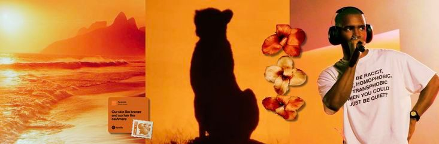
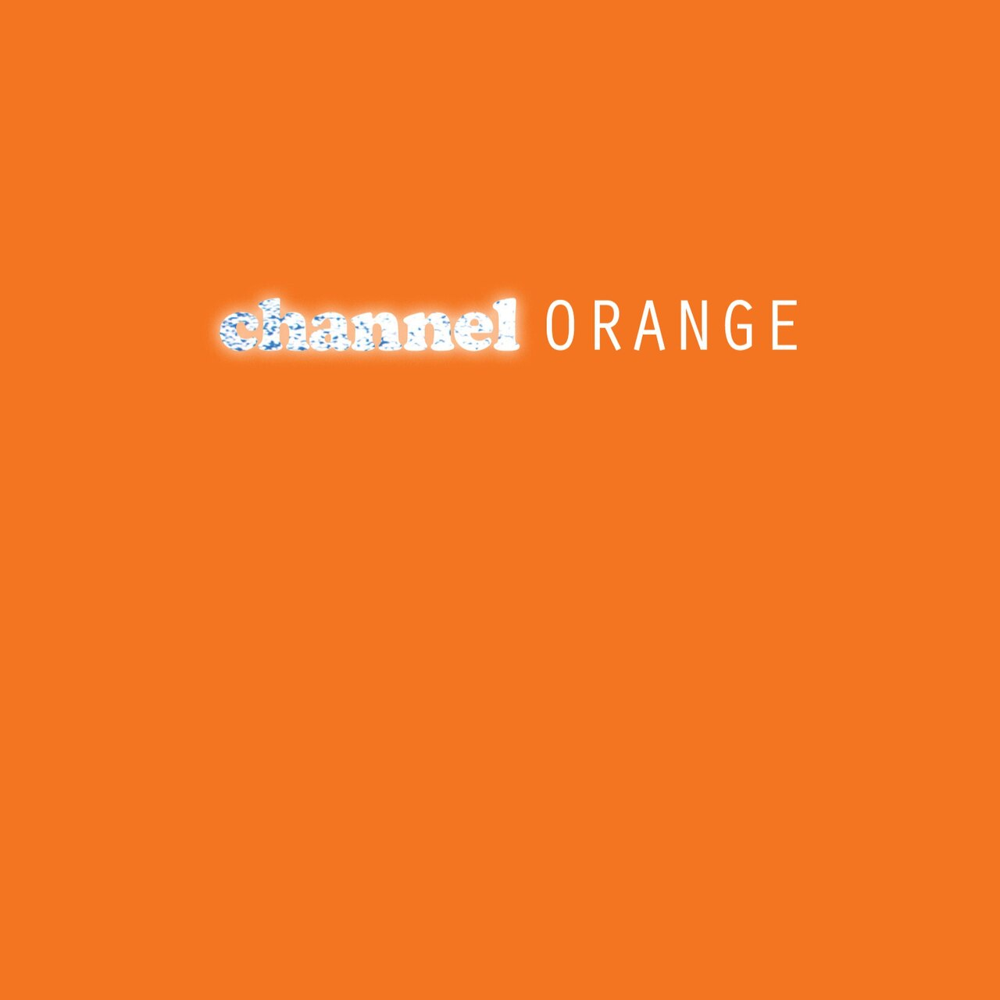
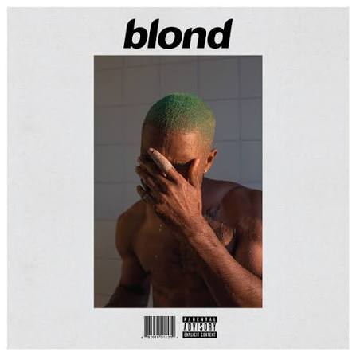

the music experience

Conheça a trajetória, os álbuns e algumas das músicas mais marcantes de Frank Ocean.

Lançado em 10 de julho de 2012 pela gravadora Def Jam Recordings, channel ORANGE é o brilhante álbum de estúdio de estreia do cantor e compositor norte-americano Frank Ocean.

Lançado em 20 de agosto de 2016 de forma independente sob o selo Boys Don't Cry, Blonde (estilizado na capa como Blond) é o aclamado segundo álbum de estúdio do cantor norte-americano Frank Ocean
Nostalgia, Ultra (estilizado como nostalgia,ULTRA.) é a mixtape de estreia do cantor e compositor americano Frank Ocean, lançada de forma independente em 16 de fevereiro de 2011.